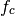
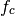
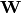
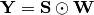

from pylayers.signal.bsignal import *
from pylayers.simul.simulem import *
<matplotlib.figure.Figure at 0x41046d0>
Generation of an Impulse of normalized energy¶
One possible manner to define an energy normalized short UWB impulse is as follows. This UWB waveform is generated with bsignal.EnImpulse function.


where  is the desired bandwidth defined at
below the spectrum maximum and  is
the central frequency of the pulse.
is the desired bandwidth defined at
below the spectrum maximum and  is
the central frequency of the pulse.
This waveform is a gaussian windowing of a sine wave of frequency
. The normalization term depends on the exponential scaling
factor  .
.
fc = 4
band = 2
thresh = 10
fe = 100
ip = EnImpulse([],fc,band,thresh,fe)
ip.info()
TUsignal
--------
shx : (343,)
shy : (343,)
dx : 0.01
xmin : -1.71
xmax : 1.71
ymin : -1.89545539648
ymax : 2.16154131873
Verification of energy normalization in both domains¶
E1= sum(ip.y*ip.y)*ip.dx()
print "Integration in time",E1
Integration in time 1.0
P = ip.esd()
E2 = sum(P.y)*P.dx()
print "Integration in frequency domain ",E2
Integration in frequency domain 1.0
Calculation of UWB channel impulse response¶
S = Simul()
S.load('where2.ini')
st = S.wav.st
sf = S.wav.sf
S.wav.info()
type: W1offset
S.wav.st.plot()
S.wav.sf.plot()
(<matplotlib.figure.Figure at 0x48a0650>,
array([<matplotlib.axes.AxesSubplot object at 0x48aa550>,
<matplotlib.axes.AxesSubplot object at 0x4474490>], dtype=object))

Here the time domain waveform is measured and the anticausal part of the signal is artificially set to 0.
To handle properly the time domain wavefom it is required to center the signal in the middle of the array.
- st stands for signal in time domain
- sf stands for signal in frequency domain
The measured waveform has a small offset of 0.7 ns, the following waveform compensate for this bias and is centered on local time origin.
S.wav.parameters['type']='W1compensate'
S.wav.eval()
S.wav.st.plot()
The frequency domain version of the signal is embedded in the same object.
sf stands for signal in frequency domain.
f,ax=S.wav.sf.plot()
Construction of the propagation channel¶
The link between Txid = 1 and Rxid =1 is simply loaded as
vc = S.VC(1,1)
nray : 500
nfreq : 181
nb rays in .tauk file: 500
nb rays 2: 500
The following representation shows the spatial spreading of the propagation channel. On the left are scattered the intensity of rays wrt to angles of departure (in azimut and elevation). On the right is the intensity of rays wrt to angles of arrival. It misses the application between the 2 planes as well as the delay dimension of the propagation channel.
vc.doadod()

Construction of the transmission channel¶
The transmission channel is obtain from the combianation of the propagation channel and the vector antenna pattern at bot side of the radio link
sc = vc.prop2tran()
The ScalChannel object contains all the information about the ray transfer functions. The transmission channel is obtained by applying a vector radiation pattern using an antenna file.
In the presented case, it comes from a real antenna which has been used during the FP7 project WHERE1 measurement campaign M1.
The antenna radiation pattern is stored in a very compact way thanks to Vector Spherical Harmonics decomposition. The following gives information about the content of the antenna object.
S.tx.A.info()
defant.vsh3
type : vsh3
Br
-------------
Nf : 121
fmin (GHz) : 2.0
fmax (GHz) : 8.0
Ncoeff s3 : 18
Bi
-------------
Nf : 121
fmin (GHz) : 2.0
fmax (GHz) : 8.0
Ncoeff s3 : 18
Cr
-------------
Nf : 121
fmin (GHz) : 2.0
fmax (GHz) : 8.0
Ncoeff s3 : 18
Ci
-------------
Nf : 121
fmin (GHz) : 2.0
fmax (GHz) : 8.0
Ncoeff s3 : 18
fig,ax = sc.plot()
The figure below plot on a same graph all the tansfer function in modulus and phase of the ray transfer function.
fig,ax = sc.plot(iy=arange(20))

If a realistic antenna is applied it gives
alpha = 1./sqrt(30) # scaling constant depends on how are stored the antenna data
sca = vc.prop2tran(S.tx.A,S.rx.A)
sca.plot()
(<matplotlib.figure.Figure at 0x48a0450>,
array([<matplotlib.axes.AxesSubplot object at 0x4897490>,
<matplotlib.axes.AxesSubplot object at 0x7f0d48860fd0>], dtype=object))

fig,ax = sca.plot(iy=arange(20))
Calculate UWB Channel Impulse Response¶
cir = sc.applywavB(S.wav.sfg)
figsize(15,15)
cir.plot()
xlabel('delay (ns)')
ylabel('Amplitude (V)')
title('Received Waveform')
<matplotlib.text.Text at 0x7f0d4b328e10>
Hermitian symetry enforcment¶
If the number of point for the transmission channel and the waveform were the same the mathematical operation is an Hadamrd-Shur product between and .

In practice this is what is done after a resampling of the time base with the greater time step.
The process whic consist in going time domain to frequency domain is delegate to a specialized class which maintain the proper binding between signal samples and their indexation either in time or in frequency domain.
wgam = S.wav.sfg
Y = sc.apply(wgam)
tau = Y.tau0
dod = Y.dod
doa = Y.doa
The transmission channel has a member data which is the time delay of each path
print 'tau =', tau
tau = [ 23.86713221 25.74826855 25.90353456 26.00589677 26.71456706
27.64609677 27.8861973 28.40727606 28.64099626 29.70841516
31.23879355 31.45147939 31.5656444 33.00969555 33.13220501
33.21104234 33.77007551 34.5104815 34.70312186 35.1232117
35.31250959 36.1848012 36.76975426 37.45035232 37.6279447
38.01572774 38.12306298 38.19069113 38.67871406 39.32593151
39.49509112 39.86471567 40.03159863 40.8039797 40.97791791
41.69566991 41.92951758 42.01423039 42.08821424 42.09877275
42.25683377 42.89361517 43.20334349 43.38811921 43.69434237
44.63339207 45.28595588 45.29257972 45.5860115 45.66394152
45.75470239 45.809703 45.89051822 46.21869515 46.30185981
46.44561934 46.67807592 46.76033457 46.85683446 46.89321202
46.90268886 47.03516415 47.21435752 47.35534699 47.66405587
47.80371906 47.98186891 48.01134886 48.44775243 48.9702404
49.04279311 49.10618879 49.6141571 49.77517159 50.06524632
50.24950477 50.48955888 50.54234748 50.67407841 50.70038352
50.83170489 51.0450064 51.16678171 51.94736653 52.06700811
52.07554342 52.13525146 52.19489119 53.22774303 54.0932939
54.21639768 54.41707085 55.17961088 55.26377154 55.38427374
55.69281322 56.01464094 56.03851137 56.13353127 56.50109556
56.52016356 56.63799275 56.86076562 56.93564665 56.97789045
57.30918643 57.31662547 57.39100019 57.43282066 57.74495649
57.76159531 57.86029151 57.99665686 58.11322282 58.19389048
58.2278284 58.3083375 58.31307211 58.55933363 58.67306783
58.76448492 58.934858 59.1032618 59.20577447 59.2159513
59.54859827 59.6604466 59.71670155 59.82823562 59.98403491
60.01118612 60.09507282 60.77898028 60.88856853 61.27669898
62.36672794 63.56523608 63.97682332 64.28993355 64.39354695
64.44036847 64.69683145 64.76408746 64.79979424 64.89406137
65.09271861 65.15516523 65.1909849 65.22203762 65.25740486
65.47528796 65.54837284 65.5770285 65.58905058 65.6038278
65.70536931 65.80030395 65.89749616 65.90154272 65.92821011
65.9693989 65.99858584 66.02925278 66.25100419 66.29124293
66.35155529 66.37758547 66.39173309 66.8244792 67.0713716
67.17069467 67.51358711 67.61226056 67.98156041 68.1027834
68.36337908 68.6588345 68.7558644 68.77884042 68.87570125
69.03683397 69.13333333 69.27701651 69.29340929 69.74102761
69.94149936 69.95773327 70.0047007 70.03675226 70.05296409
70.30884091 70.40104166 70.4639201 70.49567363 70.66220112
70.66550806 70.7564838 70.76608669 70.96346478 71.05734773
71.11708655 71.21076698 71.31678936 71.4102078 71.41643135
71.5000346 71.50971962 71.94971066 72.0327308 72.12893787
72.14362219 72.23597134 72.3931858 72.54040836 72.58922479
72.66286597 72.67149831 72.68100776 72.7631775 72.76684227
72.85840148 73.02873103 73.11996231 73.17464649 73.26569608
73.29602081 73.38691982 74.11657739 74.73713936 74.82628772
75.05823665 75.07008068 75.51315577 75.67089562 75.68264149
75.7589452 75.77067741 75.90628341 76.12206572 76.20959403
76.47804892 76.51198889 76.59907165 76.86907554 77.07915124
77.16559395 77.23599638 77.28751962 77.46706827 77.5530786
77.64766928 77.70053523 77.83109918 77.88221877 77.88935896
77.91670766 77.96777112 78.16282511 78.35002411 78.36729849
78.37712251 78.47938158 78.56428366 78.62188797 78.74617857
78.75074603 78.75746799 78.83535586 78.95365729 79.0209255
79.03804991 79.21894895 79.2360339 79.24949727 79.29043658
79.32966378 79.34086799 79.41365682 79.42484918 79.65543756
79.68891458 79.7988861 79.8158436 79.82920657 79.88238577
79.89932554 79.91267456 80.23213543 80.31518467 80.34838033
80.45504151 80.55443393 80.98372482 81.02589435 81.10813084
81.12456814 81.2067047 81.55077491 81.63248264 81.8834965
82.35237675 82.66784744 82.90980374 82.99017345 83.13970461
83.22310043 83.24380973 83.30316787 83.69173595 83.77135549
84.11271541 84.53947558 84.6582148 84.73692623 84.84390694
85.16047597 85.38459398 85.46263641 86.16157462 86.29355095
86.69379063 86.70957834 86.77065556 86.82493242 86.90168135
87.03218892 87.31473084 87.39102868 87.44470222 87.55894522
87.61512151 87.63505133 87.68837402 87.91556555 87.946763
87.99136321 88.04466038 88.21108522 88.28454162 88.28662916
88.4678975 88.54322234 88.72342731 88.80362855 88.87866886
89.18849218 89.23987649 89.29277494 89.31455026 89.51982287
89.5314171 89.65357417 89.65357417 89.70217389 89.75488978
89.77646314 89.80583995 89.88004351 89.92092485 89.97290449
89.99230651 90.03155003 90.04307611 90.10556772 90.11708433
90.1645163 90.1645163 90.21705196 90.21705196 90.23842493
90.23842493 90.26523879 90.33906501 90.36475161 90.44995498
90.45325563 90.45325563 90.45565753 90.45565753 90.46986507
90.50127071 90.50399623 90.5425661 90.57490454 90.72471181
90.72471181 90.78135419 90.79816445 90.79816445 90.87155771
90.92599776 90.94489174 90.95955145 90.95955145 90.97606523
91.01674452 91.01674452 91.01677742 91.0328146 91.0328146
91.04931509 91.25195955 91.25195955 91.2543862 91.3600767
91.38223729 91.38223729 91.42958432 91.50247113 91.52341835
91.64454516 91.72045659 91.86119964 91.8743937 91.88323508
91.88323508 91.93374426 91.95576231 91.95576231 92.02362016
92.09603683 92.14406595 92.1771291 92.1771291 92.18891127
92.21638804 92.22478047 92.37262702 92.4447703 92.69594511
92.72106317 92.79293555 93.00235603 93.18962746 93.26113874
93.49436109 93.56563947 94.59473115 94.77022903 95.07819004
95.14828194 95.20576082 95.25276316 95.27836196 95.30376279
95.32272668 95.64158676 95.64158676 95.64158676 95.6860143
95.75566128 95.75823724 95.78350589 95.82783173 95.85308202
96.0253683 96.1195783 96.1195783 96.1195783 96.18891135
96.18891135 96.18891135 96.41671098 96.42046867 96.42046867
96.43330742 96.47400832 96.6981643 96.74145929 96.75064894
96.83331654 96.89072883 96.90724087 96.95951045 96.97601078
97.16348947 97.17075463 97.21383075 97.22082124 97.22297397
97.23933818 97.28238393 97.2915207 97.30522425 97.37068001
97.37371309 97.49213386 97.56506117 97.56506117 97.62882788
97.62882788 97.63373734 97.68365671 97.69078201 97.70199589
97.75900072 97.79463129 97.83989189 97.90800671 97.91980403]
print "doa = ", doa
doa = [[ 1.58476299 2.82337562]
[ 1.95565675 2.82337562]
[ 1.58366513 3.64669121]
[ 1.16217365 2.82337562]
[ 1.58327448 2.58405149]
[ 1.92800189 3.64669121]
[ 1.19119125 3.64669121]
[ 1.91801992 2.58405148]
[ 1.20168346 2.58405148]
[ 1.58201712 3.8443768 ]
[ 1.88540492 3.8443768 ]
[ 1.23603008 3.8443768 ]
[ 1.58135697 2.90276143]
[ 1.86799543 2.90276143]
[ 1.58085767 3.52957277]
[ 1.25440242 2.90276143]
[ 1.58066764 2.70973641]
[ 1.85470308 3.52957277]
[ 1.26844699 3.52957277]
[ 1.84961653 2.70973641]
[ 1.27382517 2.70973641]
[ 1.58000894 3.70097327]
[ 1.57986238 0.2045078 ]
[ 1.83187157 3.70097327]
[ 1.2926033 3.70097327]
[ 1.82790023 0.20450779]
[ 1.57954057 5.94816123]
[ 1.29680914 0.20450779]
[ 1.57941496 0.37410438]
[ 1.81915051 5.94816123]
[ 1.30607958 5.94816123]
[ 1.81572465 0.37410438]
[ 1.30971082 0.37410438]
[ 1.57896608 5.79322803]
[ 1.5789314 2.15699379]
[ 1.07961069 0.20450779]
[ 1.8034347 5.79322803]
[ 2.07597409 0.20450779]
[ 1.3227443 5.79322803]
[ 1.80248225 2.15699379]
[ 1.3237548 2.15699379]
[ 1.0944912 5.94816123]
[ 2.06081525 5.94816123]
[ 1.10036244 0.37410437]
[ 2.05483074 0.37410437]
[ 1.57826517 0.16809561]
[ 1.57815755 4.18812978]
[ 1.12163092 5.79322803]
[ 2.03313589 5.79322803]
[ 1.78410165 0.16809561]
[ 1.57808213 6.00568632]
[ 1.34326739 0.16809561]
[ 1.57806057 2.30274742]
[ 1.57800899 0.31080206]
[ 1.78111843 4.18812978]
[ 1.34643637 4.18812978]
[ 1.57793801 2.07789474]
[ 1.77902577 6.00568632]
[ 1.78410165 0.16809561]
[ 1.77842709 2.30274742]
[ 1.34865964 6.00568632]
[ 1.34929575 2.30274742]
[ 1.77699438 0.31080206]
[ 1.3508181 0.31080206]
[ 1.77502131 2.07789474]
[ 1.35291482 2.07789474]
[ 1.77902577 6.00568632]
[ 1.5777397 5.8717291 ]
[ 1.77699438 0.31080206]
[ 1.76950012 5.8717291 ]
[ 1.99830381 0.16809561]
[ 1.35878325 5.8717291 ]
[ 1.57751539 0.75878841]
[ 1.57749366 4.04852635]
[ 1.98901871 6.00568632]
[ 1.76950012 5.8717291 ]
[ 1.98528672 0.31080205]
[ 1.76324075 0.75878841]
[ 1.36543844 0.75878841]
[ 1.76263341 4.04852635]
[ 1.36608431 4.04852635]
[ 1.57732706 2.21534229]
[ 1.57731151 4.25340343]
[ 1.75797316 2.21534229]
[ 1.75753799 4.25340343]
[ 1.37104085 2.21534229]
[ 1.97144011 5.87172911]
[ 1.37150376 4.25340343]
[ 1.57705925 5.45525968]
[ 1.75046502 5.45525968]
[ 1.37902888 5.45525968]
[ 1.57692238 0.8478169 ]
[ 1.57683772 4.12304598]
[ 1.74661951 0.8478169 ]
[ 1.38312133 0.8478169 ]
[ 1.57678205 0.65978313]
[ 1.74423854 4.12304598]
[ 1.57674513 3.00794039]
[ 1.3856556 4.12304598]
[ 1.57669642 3.00904111]
[ 1.74267172 0.65978313]
[ 1.38732344 0.65978313]
[ 1.741632 3.00794039]
[ 1.57665139 3.36356404]
[ 1.38843027 3.00794039]
[ 1.57661323 2.89238149]
[ 1.74026007 3.00904111]
[ 1.57660494 3.36177372]
[ 1.38989085 3.00904111]
[ 1.73899102 3.36356404]
[ 1.57656767 2.89437433]
[ 1.39124198 3.36356404]
[ 1.74267172 0.65978313]
[ 1.73791509 2.89238149]
[ 1.73768126 3.36177372]
[ 1.39238755 2.89238149]
[ 1.39263653 3.36177372]
[ 1.57651309 5.37784455]
[ 1.73663012 2.89437433]
[ 1.39375579 2.89437433]
[ 1.57646918 3.47446585]
[ 1.57645278 5.55541564]
[ 1.73509 5.37784455]
[ 1.5764269 3.47189004]
[ 1.3953958 5.37784456]
[ 1.73385027 3.47446585]
[ 1.39671602 3.47446585]
[ 1.73338718 5.55541564]
[ 1.39720921 5.55541564]
[ 1.73265614 3.47189004]
[ 1.57635133 0.74768014]
[ 1.39798776 3.47189004]
[ 1.73052082 0.74768014]
[ 1.40026203 0.74768014]
[ 1.73338718 5.55541564]
[ 1.73052082 0.74768014]
[ 1.57604075 5.47701869]
[ 1.57600701 3.02460566]
[ 1.72172924 5.47701869]
[ 1.40962793 5.47701869]
[ 1.57596953 3.02545102]
[ 1.72077277 3.02460566]
[ 1.57594367 3.33636357]
[ 1.4106471 3.02460566]
[ 1.57593336 1.9276429 ]
[ 1.57591768 2.92270149]
[ 1.71970986 3.02545101]
[ 1.57590996 2.59047363]
[ 1.57590753 3.33497863]
[ 1.41177973 3.02545101]
[ 1.7189764 3.33636357]
[ 1.57588208 2.9242476 ]
[ 1.41256133 3.33636357]
[ 1.57587893 2.59419971]
[ 1.71868393 1.9276429 ]
[ 1.412873 1.9276429 ]
[ 1.71823911 2.92270149]
[ 1.71802007 2.59047363]
[ 1.41334703 2.92270149]
[ 1.71795098 3.33497863]
[ 1.72172924 5.47701869]
[ 1.41358047 2.59047363]
[ 1.41365409 3.33497863]
[ 1.71722882 2.9242476 ]
[ 1.71713929 2.59419971]
[ 1.41442371 2.9242476 ]
[ 1.57581855 3.43506987]
[ 1.41451912 2.59419971]
[ 1.57578496 3.43304948]
[ 1.71542509 3.43506987]
[ 1.41634607 3.43506987]
[ 1.71447117 3.43304948]
[ 1.41736278 3.43304948]
[ 1.57570006 3.75625566]
[ 1.57569133 2.03794646]
[ 1.57567267 3.75231868]
[ 1.71205843 3.75625566]
[ 1.41993452 3.75625566]
[ 1.71181031 2.03794646]
[ 1.420199 2.03794646]
[ 1.71127983 3.75231868]
[ 1.42076448 3.75231868]
[ 1.57560836 0.10800019]
[ 1.57560722 2.51194741]
[ 1.57557634 0.10727884]
[ 1.70945092 0.10800019]
[ 1.70941854 2.51194741]
[ 1.57555834 6.10316145]
[ 1.42271414 0.10800019]
[ 1.42274866 2.51194741]
[ 1.57553774 0.20241688]
[ 1.70854006 0.10727884]
[ 1.57552731 6.1043474 ]
[ 1.42368518 0.10727884]
[ 1.70802775 6.10316145]
[ 1.57551381 1.03620192]
[ 1.42423136 6.10316145]
[ 1.57550711 0.20109101]
[ 1.7074415 0.20241688]
[ 1.42485638 0.20241688]
[ 1.70714448 6.1043474 ]
[ 1.42517305 6.1043474 ]
[ 1.7067603 1.03620192]
[ 1.42558264 1.03620192]
[ 1.70656943 0.20109101]
[ 1.57545875 6.0112901 ]
[ 1.42578615 0.20109101]
[ 1.57542961 6.01303213]
[ 1.57542427 3.8319461 ]
[ 1.5754181 2.64859032]
[ 1.70519252 6.0112901 ]
[ 1.42725421 6.0112901 ]
[ 1.57540123 3.82784063]
[ 1.57539188 2.65163528]
[ 1.70436255 6.01303213]
[ 1.57538414 4.27664883]
[ 1.70421043 3.8319461 ]
[ 1.42813917 6.01303213]
[ 1.42830137 3.8319461 ]
[ 1.70403458 2.64859032]
[ 1.42848888 2.64859032]
[ 1.70355394 3.82784063]
[ 1.42900138 3.82784063]
[ 1.70328765 2.65163528]
[ 1.42928532 2.65163528]
[ 1.70306697 4.27664883]
[ 1.42952065 4.27664883]
[ 1.57529415 1.99742373]
[ 1.70050191 1.99742373]
[ 1.43225594 1.99742373]
[ 1.57523773 0.94435105]
[ 1.57523703 5.21258637]
[ 1.57521097 2.57073257]
[ 1.69889252 0.94435105]
[ 1.69887253 5.21258637]
[ 1.43397228 0.94435105]
[ 1.4339936 5.21258637]
[ 1.57518811 2.57405498]
[ 1.69812916 2.57073257]
[ 1.4347864 2.57073257]
[ 1.57515527 1.08063378]
[ 1.69747674 2.57405497]
[ 1.43548223 2.57405497]
[ 1.5751331 0.4601565 ]
[ 1.69653964 1.08063378]
[ 1.43648169 1.08063378]
[ 1.5751125 0.09683409]
[ 1.57510962 0.4574748 ]
[ 1.69590666 0.4601565 ]
[ 1.43715681 0.4601565 ]
[ 1.69889252 0.94435105]
[ 1.57508669 0.09625336]
[ 1.69531845 0.09683409]
[ 1.69523629 0.4574748 ]
[ 1.57507629 6.12155479]
[ 1.43778421 0.09683409]
[ 1.43787184 0.4574748 ]
[ 1.57506132 0.18183715]
[ 1.57505113 6.12251339]
[ 1.57505019 3.76688617]
[ 1.43857017 0.09625336]
[ 1.69428454 6.12155479]
[ 1.43888701 6.12155479]
[ 1.57503642 0.18076368]
[ 1.57502972 3.763417 ]
[ 1.69385685 0.18183715]
[ 1.57502912 4.31238831]
[ 1.43934321 0.18183715]
[ 1.69353899 3.76688617]
[ 1.43965369 6.12251339]
[ 1.43968227 3.76688617]
[ 1.57500446 5.30132537]
[ 1.57500355 6.03841075]
[ 1.57500284 5.76570886]
[ 1.44010201 0.18076368]
[ 1.69295429 3.763417 ]
[ 1.69293696 4.31238831]
[ 1.44030596 3.763417 ]
[ 1.44032445 4.31238831]
[ 1.5749814 5.76860732]
[ 1.57497964 6.03983004]
[ 1.69223244 5.30132537]
[ 1.69220651 6.03841075]
[ 1.69218608 5.76570886]
[ 1.44107598 5.30132537]
[ 1.44110364 6.03841075]
[ 1.44112542 5.76570886]
[ 1.69157347 5.76860732]
[ 1.44177893 5.76860732]
[ 1.44183253 6.03983004]
[ 1.57493981 0.53189208]
[ 1.5749347 0.99289431]
[ 1.57491276 5.17309118]
[ 1.69038459 0.53189208]
[ 1.44304719 0.53189208]
[ 1.69023844 0.99289431]
[ 1.44320311 0.99289431]
[ 1.68961124 5.17309118]
[ 1.44387222 5.17309118]
[ 1.69223244 5.30132537]
[ 1.57484435 2.3109531 ]
[ 1.5748289 2.31512164]
[ 1.68765468 2.3109531 ]
[ 1.4459596 2.3109531 ]
[ 1.57480601 5.69874146]
[ 1.68721276 2.31512164]
[ 1.69023844 0.99289431]
[ 1.44643109 2.31512164]
[ 1.68655794 5.69874146]
[ 1.44712972 5.69874146]
[ 1.57475963 0.41790236]
[ 1.57473962 0.41566183]
[ 1.68523055 0.41790236]
[ 1.448546 0.41790236]
[ 1.57472547 5.25766028]
[ 1.44915704 0.41566183]
[ 1.68425282 5.25766028]
[ 1.44958923 5.25766028]
[ 1.57466539 4.01190429]
[ 1.57465947 5.81159043]
[ 1.68253225 4.01190429]
[ 1.57464093 5.81403574]
[ 1.45142515 4.01190429]
[ 1.68236278 5.81159043]
[ 1.45160599 5.81159043]
[ 1.57462668 0.4879745 ]
[ 1.4521725 5.81403574]
[ 1.57461095 2.25947814]
[ 1.57460861 0.4854722 ]
[ 1.68142366 0.4879745 ]
[ 1.68425282 5.25766028]
[ 1.45260812 0.4879745 ]
[ 1.57459802 2.26358749]
[ 1.68097308 2.25947814]
[ 1.57458685 2.37817479]
[ 1.45308894 2.25947814]
[ 1.45316052 0.4854722 ]
[ 1.68060248 2.26358749]
[ 1.57457235 2.38182983]
[ 1.45348442 2.26358749]
[ 1.68028244 2.37817479]
[ 1.45382594 2.37817479]
[ 1.57455367 3.0573281 ]
[ 1.67986687 2.38182983]
[ 1.45426943 2.38182983]
[ 1.57453408 3.05776852]
[ 1.67933157 3.0573281 ]
[ 1.57452971 3.28243376]
[ 1.45484068 3.0573281 ]
[ 1.57452024 5.74519273]
[ 1.57451976 2.98305503]
[ 1.57451469 3.05820438]
[ 1.57451469 3.05820438]
[ 1.67877002 3.05776852]
[ 1.57451049 3.28170382]
[ 1.45543996 3.05776852]
[ 1.6786449 3.28243376]
[ 1.45557349 3.28243376]
[ 1.57450363 5.74785228]
[ 1.45484068 3.0573281 ]
[ 1.57450069 2.98387379]
[ 1.67837347 5.74519273]
[ 1.67835965 2.98305503]
[ 1.45586316 5.74519273]
[ 1.45587791 2.98305503]
[ 1.67821421 3.05820438]
[ 1.67821421 3.05820438]
[ 1.57449146 3.28098137]
[ 1.57449146 3.28098137]
[ 1.45603312 3.05820438]
[ 1.45603312 3.05820438]
[ 1.67809389 3.28170382]
[ 1.45616153 3.28170382]
[ 1.57448542 1.82436452]
[ 1.45543996 3.05776852]
[ 1.57448181 2.9846842 ]
[ 1.57448181 2.9846842 ]
[ 1.45603312 3.05820438]
[ 1.45603312 3.05820438]
[ 1.57448114 3.35546549]
[ 1.67781298 2.98387379]
[ 1.45637136 5.74785228]
[ 1.45557349 3.28243376]
[ 1.45646133 2.98387379]
[ 1.6775484 3.28098137]
[ 1.6775484 3.28098137]
[ 1.45587791 2.98305503]
[ 1.45674369 3.28098137]
[ 1.45674369 3.28098137]
[ 1.67737524 1.82436452]
[ 1.57446265 3.35437606]
[ 1.4569285 1.82436452]
[ 1.67727174 2.9846842 ]
[ 1.67727174 2.9846842 ]
[ 1.67725234 3.35546549]
[ 1.45674369 3.28098137]
[ 1.45674369 3.28098137]
[ 1.45616153 3.28170382]
[ 1.45703895 2.9846842 ]
[ 1.45703895 2.9846842 ]
[ 1.45705966 3.35546549]
[ 1.45703895 2.9846842 ]
[ 1.45703895 2.9846842 ]
[ 1.45646133 2.98387379]
[ 1.57444523 4.05896272]
[ 1.57444435 3.3532975 ]
[ 1.57444435 3.3532975 ]
[ 1.6767223 3.35437606]
[ 1.45762535 3.35437606]
[ 1.57443872 3.94502088]
[ 1.57443391 4.05491913]
[ 1.45705966 3.35546549]
[ 1.67622274 4.05896272]
[ 1.57442481 0.72326737]
[ 1.67619736 3.3532975 ]
[ 1.67619736 3.3532975 ]
[ 1.45815851 4.05896272]
[ 1.4581856 3.3532975 ]
[ 1.4581856 3.3532975 ]
[ 1.67603598 3.94502088]
[ 1.45835785 3.94502088]
[ 1.6758979 4.05491913]
[ 1.4581856 3.3532975 ]
[ 1.4581856 3.3532975 ]
[ 1.45762535 3.35437606]
[ 1.45850521 4.05491913]
[ 1.57441102 0.71991807]
[ 1.67563689 0.72326737]
[ 1.45878379 0.72326737]
[ 1.57439265 1.90801416]
[ 1.67524147 0.71991807]
[ 1.45920582 0.71991807]
[ 1.5743808 2.32983136]
[ 1.6747144 1.90801416]
[ 1.45976837 1.90801416]
[ 1.67437448 2.32983136]
[ 1.46013118 2.32983136]
[ 1.57432046 1.18034254]
[ 1.57431393 2.77310552]
[ 1.67264301 1.18034254]
[ 1.46197928 1.18034254]
[ 1.57429784 2.7748713 ]
[ 1.67245571 2.77310552]
[ 1.57429517 4.47216258]
[ 1.57429424 5.52004974]
[ 1.46217921 2.77310552]
[ 1.57428189 2.77662098]
[ 1.57428189 2.77662098]
[ 1.57428189 5.52342262]
[ 1.67199383 2.7748713 ]
[ 1.46267222 2.7748713 ]
[ 1.67191724 4.47216259]
[ 1.67189047 5.52004974]
[ 1.46275397 4.47216259]
[ 1.46278255 5.52004974]
[ 1.46217921 2.77310552]
[ 1.67153581 2.77662098]
[ 1.67153581 2.77662098]
[ 1.67153581 5.52342262]
[ 1.46316113 2.77662098]
[ 1.46316113 2.77662098]
[ 1.46316113 5.52342262]
[ 1.57425387 0.77512951]
[ 1.46316113 2.77662098]
[ 1.46316113 2.77662098]
[ 1.57425327 3.99303873]
[ 1.46267222 2.7748713 ]
[ 1.5742438 3.06429193]
[ 1.57424226 3.9894097 ]
[ 1.57424193 0.77175372]
[ 1.57423899 1.80709108]
[ 1.67073133 0.77512951]
[ 1.67071425 3.99303873]
[ 1.46401985 0.77512951]
[ 1.46403809 3.99303873]
[ 1.57422729 3.06466287]
[ 1.67044238 3.06429193]
[ 1.67039808 3.9894097 ]
[ 1.57422527 3.27088127]
[ 1.67038868 0.77175372]
[ 1.46432829 3.06429193]
[ 1.46437558 3.9894097 ]
[ 1.46438561 0.77175372]
[ 1.67030422 1.80709108]
[ 1.57421999 2.70918484]
[ 1.46447577 1.80709108]
[ 1.57421573 4.39236862]
[ 1.57421317 3.55509877]
[ 1.57421317 3.55509877]
[ 1.57421094 3.06503027]
[ 1.57421094 3.06503027]
[ 1.6699683 3.06466287]
[ 1.57420902 3.27026528]
[ 1.6699102 3.27088127]
[ 1.46483436 3.06466287]
[ 1.46489638 3.27088127]
[ 1.57420515 2.71118474]
[ 1.66975865 2.70918484]
[ 1.46505815 2.70918484]
[ 1.57420079 1.10471258]]
symHz force the Hermitian symetry of Y with as an argument here a zero padding of 500 points
UH = Y.symHz(500)
UH.plot(dB=False)
(<matplotlib.figure.Figure at 0x7f0d4943fed0>,
array([<matplotlib.axes.AxesSubplot object at 0x7f0d4a1cdd10>,
<matplotlib.axes.AxesSubplot object at 0x7f0d4a1dcb90>], dtype=object))

uh = UH.ifft(1)
uh.plot()

ips = Y.ift(500,1)
t = ips.x
ip0 = TUsignal(t,ips.y[0,:])
plot(UH.x,real(UH.y[0,:]),UH.x,imag(UH.y[0,:]))
U0 = FHsignal(UH.x,UH.y[0,:])
u0 = U0.ifft(1)
u1 = ifft(U0.y)
plt.figure()
<matplotlib.figure.Figure at 0x74a7cd0>

<matplotlib.figure.Figure at 0x74a7cd0>
plot(uh.x,uh.y[0,:]*1000+3)
[<matplotlib.lines.Line2D at 0x74b8510>]